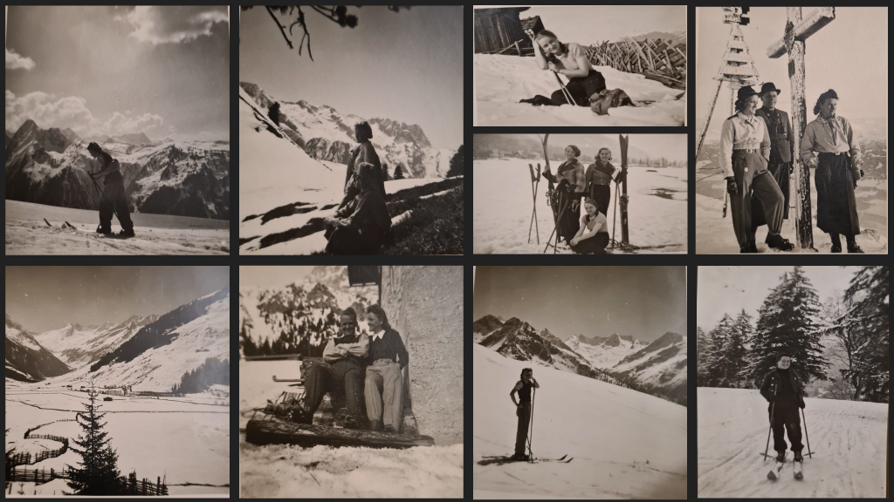
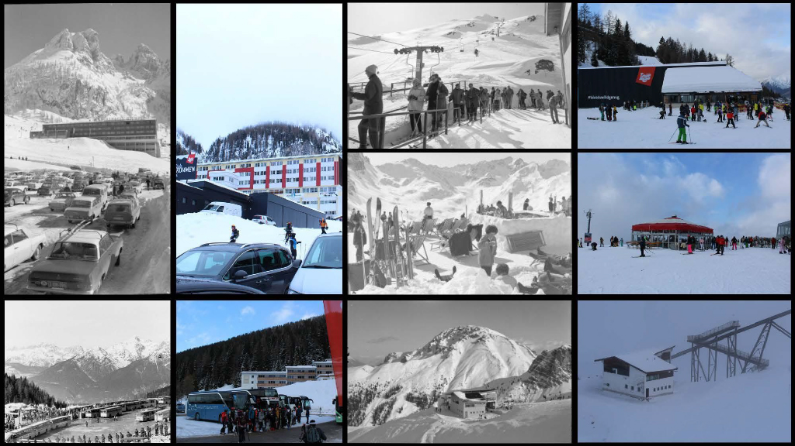
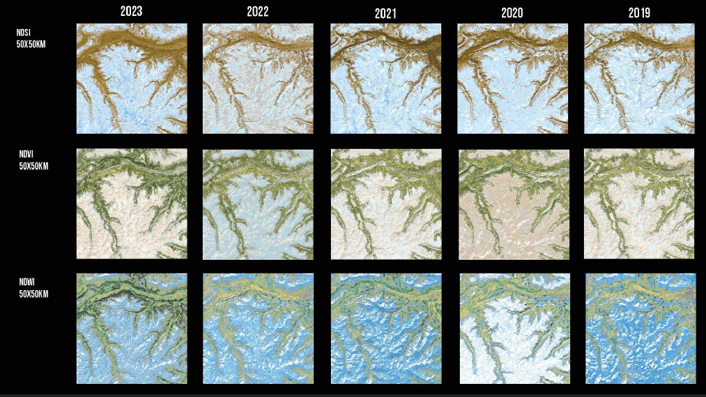
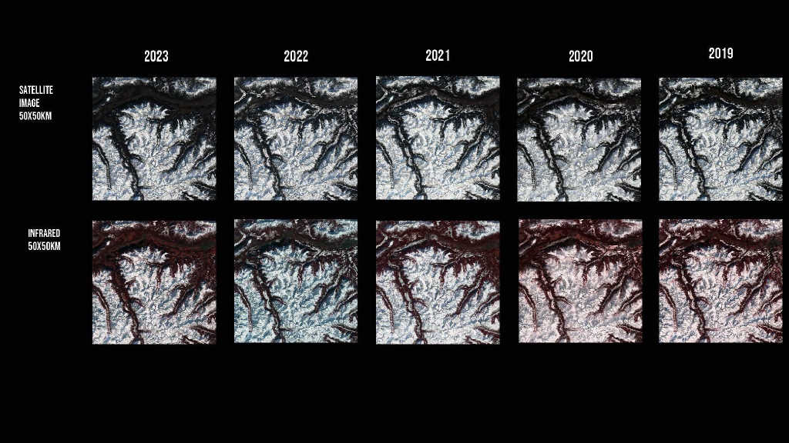
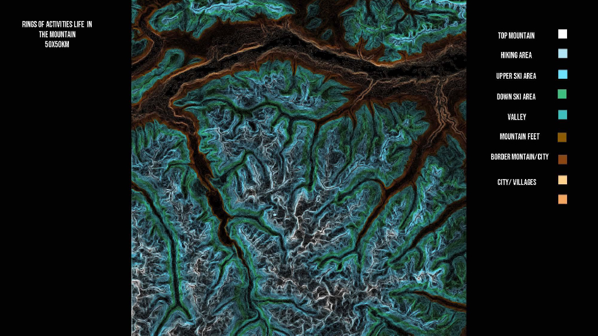
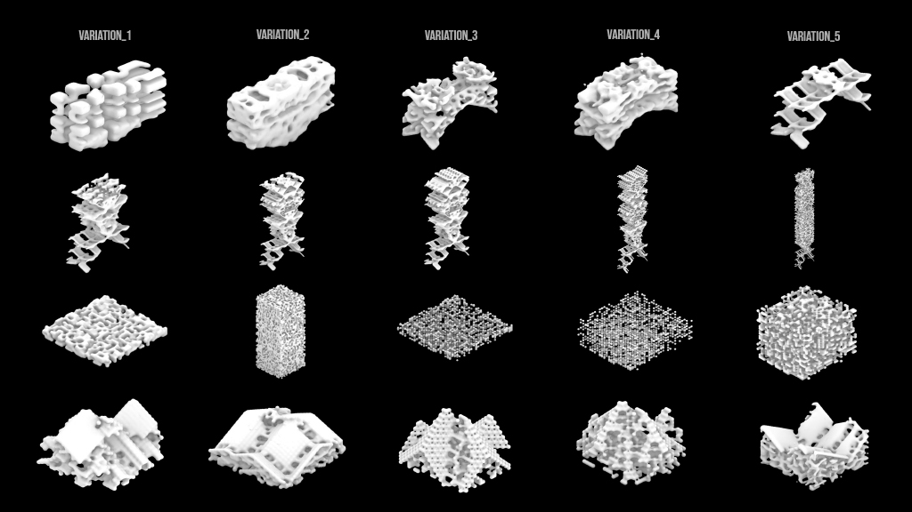
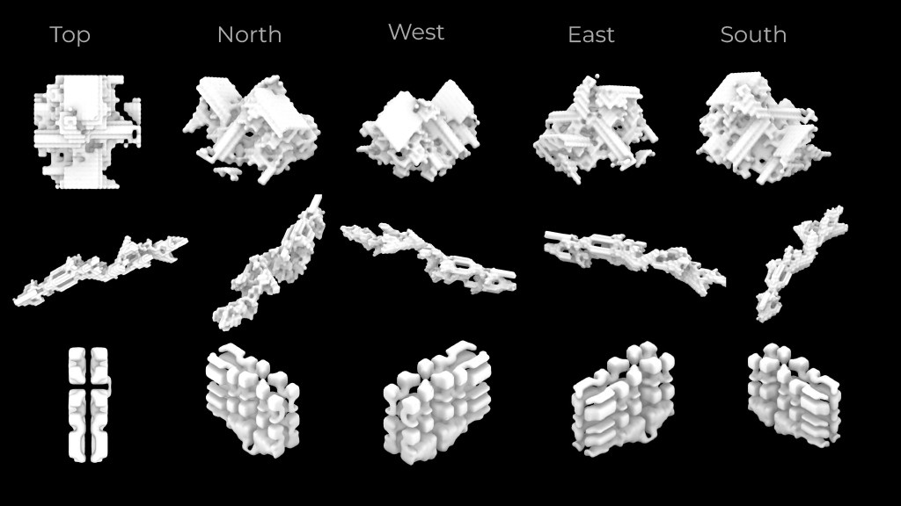

Bachelor's Thesis · Generative Design · Axamer Lizum
Generative Snow Architecture
.jpg) Created with AI
Created with AI
Created with AI
Created with AI
Inspired by nostalgic family photographs of skiing, this experimental Bachelor's thesis critically examines the future of winter sports in an era of climate change. Focusing on the Axamer Lizum resort near Innsbruck, our demographic and historical analysis revealed a massive, continuous surge in international tourism.
Yet our climate mapping exposed a contradictory reality: snow levels are drastically declining. To accommodate the crowds despite the lack of snow, conventional ski infrastructure increasingly excavates the mountain, leaving permanent, devastating scars on the alpine ecosystem.


To move from anecdote to evidence, we analyzed five years of satellite imagery (2019–2023) across a 50×50 km area around Axamer Lizum — comparing snow index (NDSI), vegetation index (NDVI), and water index (NDWI) year over year, alongside raw satellite and infrared bands.



Conventional ski infrastructure increasingly excavates the mountain — leaving permanent, devastating scars on the alpine ecosystem.
In response, our project proposes a dual-layered, zero-surface-impact architecture — one strategy for when there is snow, and another for when there isn't.
The first layer addresses the winter months: by analyzing the microscopic formation of snowflakes, we trained custom AI models and generative algorithms to design ephemeral surface structures. When it snows, the falling snow naturally builds these temporary, sculptural forms, which melt away entirely in the spring without a trace.


The second layer addresses the increasingly frequent snowless periods. Recognizing that the mountain surface needs to be protected, our design shifts the permanent human footprint underground.
A network of subterranean tunnels provides a hidden infrastructure where visitors can still navigate and experience the mountain when there is no snow. By moving activity below the surface, the alpine landscape above is left untouched, allowing the fragile ecosystem to recover while still sustaining the region's vital tourism.
 Created with AI
Created with AI